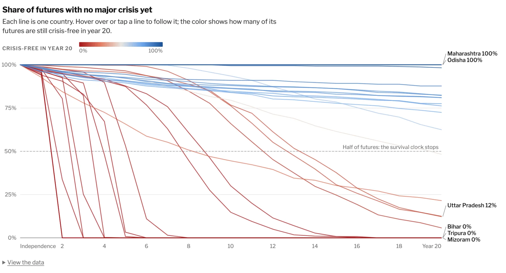
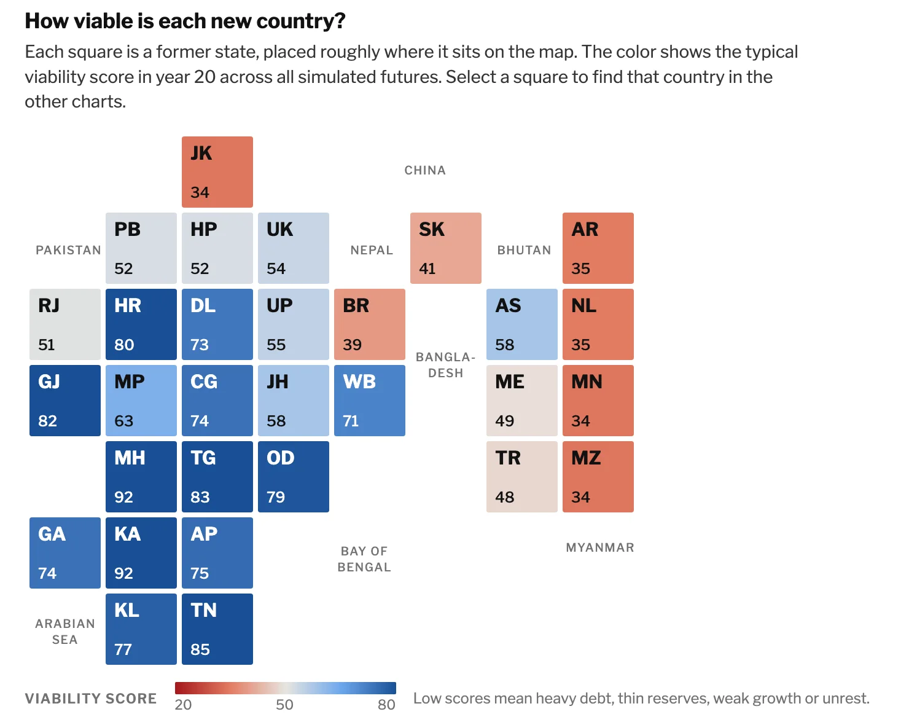
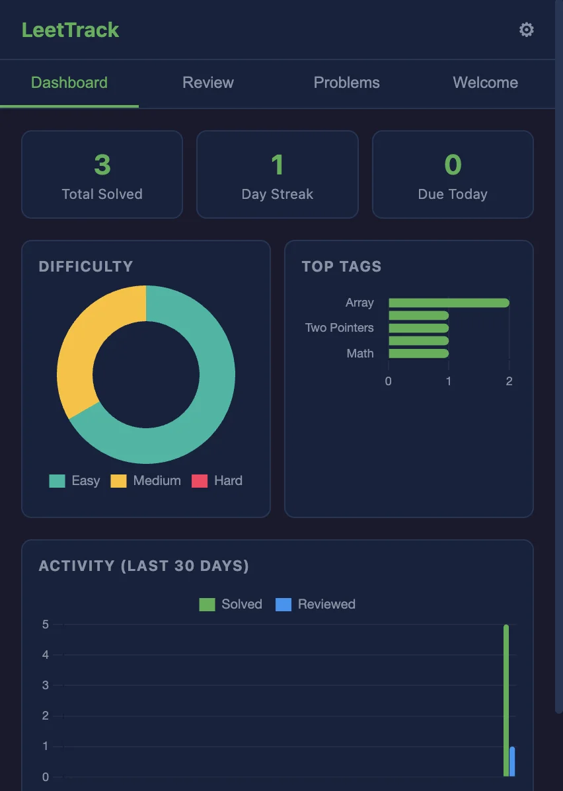
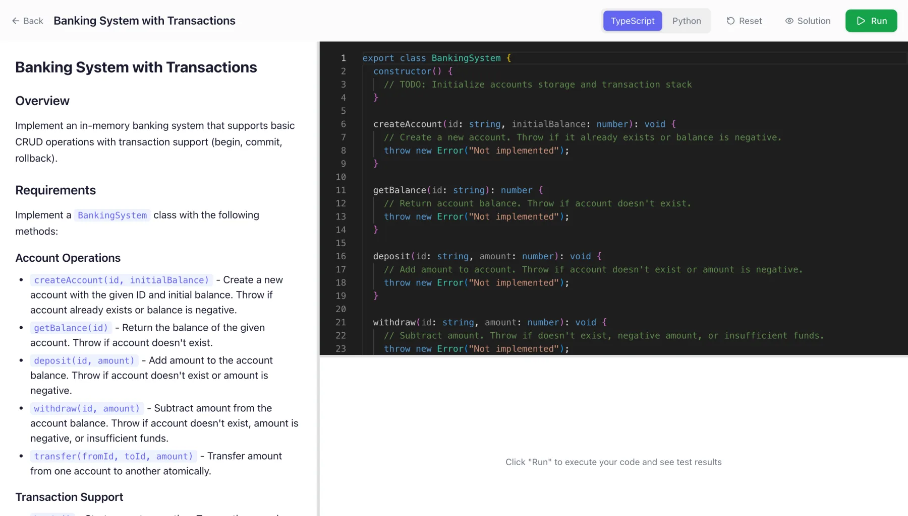

Hi, I'm Sai.
I build practice tools and data stories.
Offline interview gyms, a spaced-repetition tracker for LeetCode, and a static site generator for charts you can explore.

Selected work
Code Gym
A gym for coding interviews and system design that works fully offline, on a plane or on a phone. Python runs in the browser, and nothing leaves the device.
- Coding problems
- 138
- Patterns
- 18
- Lessons
- 27
- Mock interviews
- 12

LeetTrack
A Chrome extension that schedules LeetCode reviews with the SM-2 spaced-repetition algorithm, right before you would forget a solution.

Forge
A self-hosted platform for hands-on coding interviews. Build a banking system, a file system or a lazy data pipeline in the browser editor, then run the tests in TypeScript or Python.
What I'm studying
Courses and workshops I've worked through recently, with the code I wrote along the way.
-
AI infrastructure and GPU computing
O'Reilly live event. Kubernetes labs on a local kind cluster, including batch job queueing with Kueue.
-
Source
Agentic RAG with LangGraph
Exercises from the O'Reilly course, adapted to run on Google Gemini.
-
Source
LangChain Interrupt 2026
Workshop notebooks on building Deep Agents.
Get in touch
Questions about any of these projects, or ideas for new ones, are welcome.